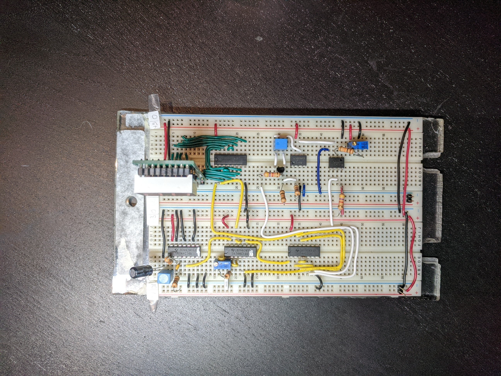

Analog-to-Digital Convertor
 This class project was to convert an analog signal to a digital one. This was done by connecting 5 components:
- Trigger Pulse Generator
- Clock Pulse Generator
- Counter
- Analog to Time Convertor
- Control Logic
Components
- Trigger Pulse Generator
-
The trigger pulse generator is responsible for generating periodic pulses, which mark the beginning of data collection. Ideally this runs in a loop, taking data continuously.
- Clock Pulse Generator
-
The clock pulse generator produces a continuous square wave with constant period, which allows us to keep track of its pulses.
- Counter
-
When given the start signal from the trigger pulse generator, starts counting pulses from the clock pulse generator until given a stop pulse from the analog to time convertor.
- Analog to Time Convertor
-
This component will generate a time window linearly dependent on the input voltage we would like to convert, and produce a pulse to mark the end of data collection. Since the time is linearly dependent on the voltage, we can map a relation between how many square waves are counter by the counter, to an analog voltage.
- Control Logic
-
Organizes each component to work with each other.